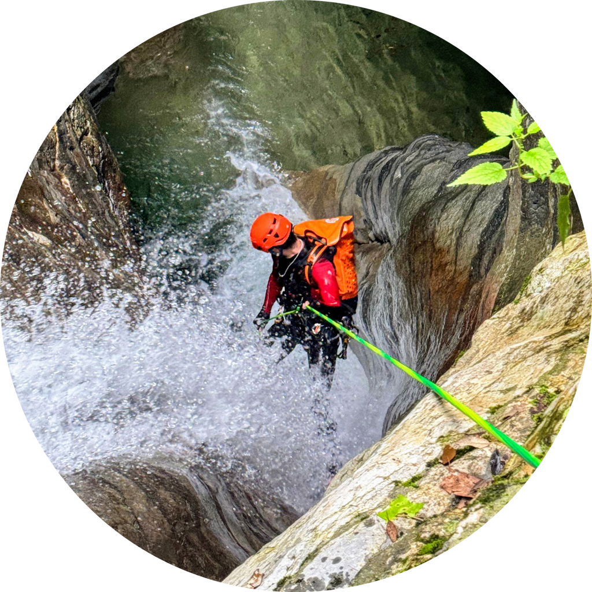
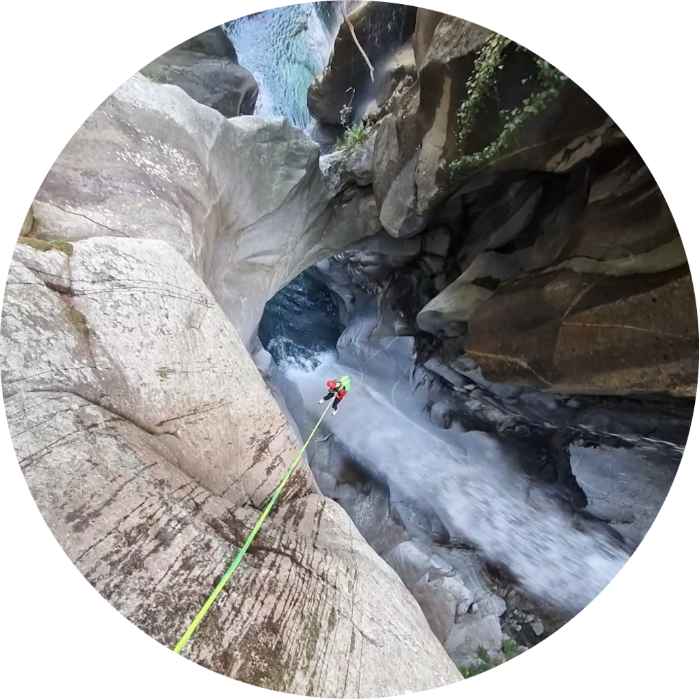
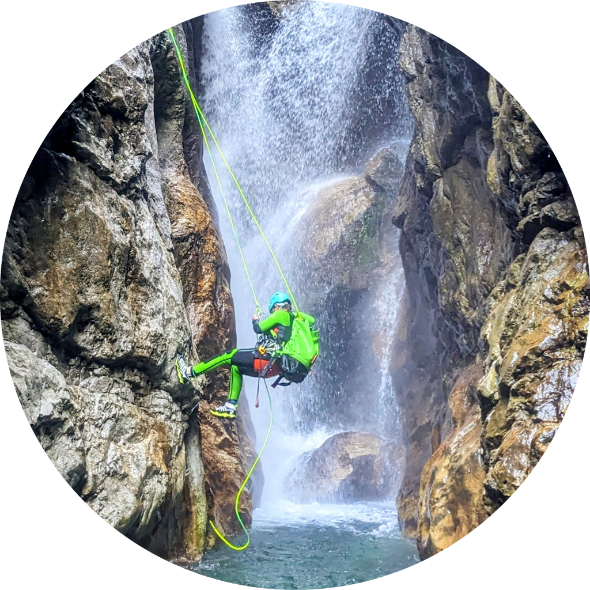

We are passionate canyoning enthusiasts who often struggled with the lack of a truly comprehensive planning tool for our adventures. Existing apps missed key features like access routes to canyon starting points on a map, seamless navigation to parking lots, or offline availability of crucial data like descriptions or topos. Planning always required juggling multiple apps, downloading topographies beforehand, and guessing access routes according to written text. Frustrated by this, we decided to create the app we always wished for – a one-stop solution packed with high-quality data, offline access, and all the features canyoneers need. Our mission is to make canyoning easier and more enjoyable for everyone.

- App Development
- Website
- Experienced in mobile Application Development
- Authorized Canyoning Guide at Bergsportführerverband Tirol
- Open Water Diver at PADI
- Sport Boat License for Coastal and Inland Waters
- Rescue Swimmer and Lifeguard at DLRG
- Paramedic at DRK

- App Development
- 5 years of professional Experience in App and Web Development
- TU Wien graduate

- Instagram Account
- Authorized Canyoning Guide at Bergsportführerverband Tirol
- Open Water Diver at VDTL